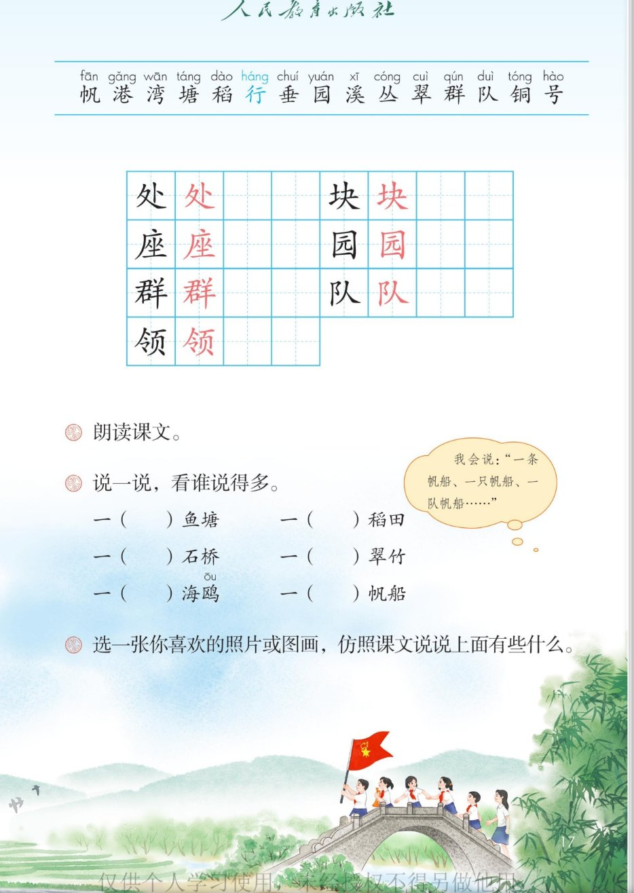

×
🔊 手机听不到声音怎么办？照这 3 步做
① 用
Edge 浏览器打开
www.jeepsh.cn（在微信里打开的点右上角「⋯ → 在浏览器打开」；没装 Edge 就到应用商店搜「Edge」安装）。
② 应用商店搜
「讯飞语记」安装 → 打开它 →
通用设置 → 语音合成设置 → 打开
「合成系统接口」和
「全局生效」两个开关 → 再选一个
中文发音人。
③ 系统语言设为
简体中文，点「
播放」试听能说中文后，
彻底关闭浏览器再重开（后台划掉），回到课件点读就有声音。
→ 打开声音自检
🎵 第 1 课《场景歌》· 有声图文带读
统编版语文 · 第二单元·识字 · 课本 P16~17
课文 4 个小节
会认字 15
会写字 7
听写词 8
近义词 4 组
深入理解 8 题
本课本领 量词搭配
🎧 五步学（可随时点任意一句、一个字、一个词单独听）：
① 听读课文——一小节一小节读，读到哪一句哪一句发光；开「跟读」后读完一句留时间让你自己读。
② 学字词——15 个会认字、7 个会写字（含书写提示），点一个读一个。
③ 词语·听写·造句——听写 8 个词（读两遍→你写→报答案→听示范句），再听 4 组近义词辨析。
④ 深入理解——8 道题（认知 / 理解 / 运用 / 拓展），开放题答案不唯一，先想后看。
⑤ 场景接龙·分角色——四个场景接龙说，再分角色把这节课文读成一首儿歌。
① 听读课文（点哪一句，读哪一句）点每节前的 ①②③④ 听整节
注音只标本课要认、要写的字，读音来自课本第 17 页生字表
🎤 朗读要求（老师标准）
① 读准字音：一行（háng）、红领巾（lǐng）、铜号（hào）；
② 「一」不拖长，量词和景物连起来读（一只海鸥，不读成「一只 海鸥」）；
③ 一句里有两个短语，中间轻停，句号停稳；
④ 读得像拍手歌，一句一句有节奏；
⑤ 最后「一片欢笑」读得高兴、响亮。
①一只海鸥，一条帆船。
一艘军舰，一处港湾。
②一方鱼塘，一块稻田。
一行垂柳，一座花园。
③一道小溪，一座石桥。
一丛翠竹，一群飞鸟。
④一面队旗，一把铜号。
一队“红领巾”，一片欢笑。
🤔 想一想（点我可跳过）
课本的样子（点一张图，听读这一页）照录课本原文

第 17 页 · 生字与课后题
📖 人教版《语文》二年级上册 · 课本第 16~17 页 · 图片仅供个人学习，版权归人民教育出版社所有
📖 课本原注：① 本文由人民教育出版社小学语文室编写。
② 会认字（15 个）点一个字，听读音、词语和课文里的句子
② 会写字（7 个）结构、部首、笔画与书写提示为通用规范，供参考，以教材和老师的指导为准
处
chù
一处 · 到处
5 画 · 半包围（夂）
撇舒展，捺写平
块
kuài
一块 · 石块
7 画 · 左右（土）
左窄右宽，土旁末笔变提
座
zuò
座位 · 一座
10 画 · 半包围（广）
广字头横长撇舒展
园
yuán
花园 · 公园
7 画 · 全包围（囗）
外框方正，末横封口
群
qún
一群 · 群众
13 画 · 左右（君+羊）
左窄右宽，末竖要长
队
duì
队旗 · 排队
4 画 · 左右（阝）
左耳要小，右撇捺舒展
领
lǐng
领巾 · 带领
11 画 · 左右（令+页）
左窄右宽，右页末笔是点
③ 会写字的组词（一字开花）点一行，听读这一组词语
处 块 座一处 到处 一块 石块 座位 让座
园 群花园 公园 一群 群众
队 领队旗 排队 领巾 带领
③ 听写（8 个词）读两遍 → 你在纸上写 → 报答案 → 听示范句
准备听写 · 共 8 个词
○ ○ ○
点下面的「开始听写」，听到一个词就写一个词。
③ 听写的词 · 造句示范点词听读，点句子听示范句，再自己说一句
1到处会写字
示范句：春天到了，到处开满了鲜花。
✏️ 我也能说：什么地方，到处有什么。比如：公园里到处是笑声。
2一块会写字
示范句：田里有一块绿油油的稻田。
✏️ 我也能说：一块什么。比如：桌上放着一块小石头。
3座位会写字
示范句：我坐在自己的座位上看书。
✏️ 我也能说：谁坐在什么样的座位上。比如：我坐在靠窗的座位上。
4花园会写字
示范句：我家门前有一个小花园。
✏️ 我也能说：哪里有一个怎样的花园。比如：学校里有一个开满月季的花园。
5一群会写字
示范句：树上一群小鸟在唱歌。
✏️ 我也能说：一群什么，在做什么。比如：一群小朋友在操场上跑步。
6排队会写字
示范句：同学们排着队走出教室。
✏️ 我也能说：谁排着队去哪里。比如：我们排着队去操场做操。
7领巾会写字
示范句：我戴上红领巾，心里特别高兴。
✏️ 我也能说：谁戴上红领巾，心情怎样。比如：他戴上红领巾，笑得多神气。
8公园会写字
示范句：星期天，我们一家去公园玩。
✏️ 我也能说：什么时候，谁去哪里玩。比如：下午我和爷爷去公园散步。
③ 近义词辨析（4 组）相同点 / 不一样在哪 / 各造一句
港湾 — 港口
相同：都是船停靠、避风的地方。
不一样：港湾多指海边能挡风浪的一片水域，写景更美；港口是停船、装卸货物的码头，说话更常用。
港湾：天黑了，渔船都回到了港湾。
港口：轮船停在港口卸货。
翠竹 — 青竹
相同：都是绿色的竹子。
不一样：翠竹带颜色，翠是青绿、鲜亮，写景更有画面；青竹就是绿色的竹子，更直白。
翠竹：屋后有一丛翠竹。
青竹：山坡上长满了青竹。
欢笑 — 笑声
相同：都跟高兴、笑有关。
不一样：欢笑是大家高兴地说笑，是一种场面；笑声是笑出来的声音。
欢笑：教室里一片欢笑。
笑声：楼道里传来一阵笑声。
军舰 — 战舰
相同：都是军队用的船。
不一样：军舰是统称，执行任务的军用船都叫军舰；战舰多指打仗用的战斗舰艇。
军舰：一艘军舰停在港湾里。
战舰：海面上开来一艘战舰。
③ 词语拓展（说一说，记一记）
量词家族只 条 艘 处 方 块 行 座 道 丛 群 面 把 队 片
表示多一群飞鸟 一丛翠竹 一队红领巾 一行垂柳
四幅画海边：海鸥·帆船·军舰·港湾 田园：鱼塘·稻田·垂柳·花园
色与声翠（青绿） 欢笑（声音）
我也会说一本书 一支笔 一朵花 一棵树 一片叶子
④ 深入理解（8 题 · 先想后看）标「答案不唯一」的题，说得有道理都对
认知《场景歌》一共写了几个场景？分别在哪里？
看解析
🤔 想一想
解析：
第一小节写海边：海鸥、帆船、军舰、港湾。
第二小节写田园：鱼塘、稻田、垂柳、花园。
第三小节写山间：小溪、石桥、翠竹、飞鸟。
第四小节写校园活动：队旗、铜号、红领巾、欢笑。
每小节四样景物，四样景物在同一个地方，合起来就是一幅画。
认知“一队红领巾”里的“红领巾”指的是什么？
看解析
🤔 想一想
解析：
红领巾是少先队员戴在脖子上的标志。
这里用红领巾来代替人，说的是“一队少先队员”，这样说更形象、更亲切。
后面接着说“一片欢笑”，说明孩子们正高兴地在一起活动。
这种用标志来代人的说法，叫“借代”，二年级只要知道它指的是少先队员就可以了。
理解为什么说“一方鱼塘”“一块稻田”，不说“一个鱼塘”“一个稻田”？
看解析
🤔 想一想
解析：
“一方”是说鱼塘方方正正的，像一方手帕。
“一块”是说稻田是一块一块的田地，连成一片。
“个”什么都能配，可是说不出样子；用对了量词，画面就清楚了。
量词用得好，景物就有了形状。
理解“一行垂柳”的“行”读第二声，和“航”同音。它还有一个读音，表示“走”的意思，读什么？能组个词吗？
看解析
🤔 想一想
解析：
读第二声、和“航”同音时，表示排成一排，比如一行垂柳、一行字。
另一个读音和“星”同音，表示走、可以做，比如行走、不行、行人。
这是一个多音字，要看它在句子里是什么意思，再定读音。
看意思定读音，是多音字最好用的办法。
理解课文每一句都是“一（ ）+景物”，这样写有什么好处？
看解析
🤔 想一想
解析：
每一句都是“一什么”，句子短短的、整整齐齐。
四个短句凑成一小节，就像给一个地方拍了四张照片。
读起来一顿一顿，很有节奏，像拍手歌，好记又好背。
整齐的句式 + 清晰的画面，是这首儿歌好背的秘密。
运用（课后题②）说一说，看谁说得多：一（ ）鱼塘 一（ ）稻田 一（ ）石桥 一（ ）翠竹 一（ ）海鸥 一（ ）帆船
看解析
🤔 想一想
解析：
一（方）鱼塘；还可以说一片鱼塘、一口鱼塘。
一（块）稻田；还可以说一片稻田、一亩稻田。
一（座）石桥；还可以说一道石桥。
一（丛）翠竹；还可以说一片翠竹、一竿翠竹（一根竹子叫一竿）。
一（只）海鸥；还可以说一群海鸥、一对海鸥。
一（条）帆船；还可以说一只帆船、一队帆船，就像课本上小朋友说的那样。
🌈 答案不唯一：量词用得对、说得通，就算对；能说出别人没想到的，更棒。
运用（课后题③）选一张你喜欢的照片或图画，仿照课文说说上面有些什么。
看解析
🤔 想一想
解析：
第一步：看照片，说出这是什么地方，比如“这是我家的小院”。
第二步：数一数有几样东西，每样用一个合适的量词，比如一棵大树、一张石桌、两只小猫。
第三步：连起来说成两三句，最后加一句心里的感觉，比如“小院里真安静”。
🌈 答案不唯一：说清楚“在哪里 + 有什么 + 什么样子”，就是一段完整的话。
拓展“一道小溪”还能说成“一条小溪”吗？换了量词，感觉有什么不一样？
看解析
🤔 想一想
解析：
“一道”是把小溪看成长长的一道水，像画上的一条线，看着更细、更清。
“一条”是最常用的说法，像一条带子，读起来更顺口。
“一座小溪”就不行了，因为“座”是用来说桥、山、房子的。
所以换量词要看这个东西长什么样，不能随便换。
🌈 答案不唯一：能说出“为什么这样配”，比记住答案更重要。
⑤ 场景接龙（说一说，连起来）
💬 说话支架：先看是哪里 → 再数有哪几样东西 → 用对量词 → 说成一句「一（ ）什么」。
⑤ 分角色朗读（四个场景，一人读一节）点一个角色，听他（她）读的那一节
🌊 海边
“一只海鸥，一条帆船。一艘军舰，一处港湾。”
💬 读得开阔、轻快，像海风吹过来
🌾 田园
“一方鱼塘，一块稻田。一行垂柳，一座花园。”
💬 读得柔和、舒展，像走在乡间小路上
🏞 山间
“一道小溪，一座石桥。一丛翠竹，一群飞鸟。”
💬 读得清亮，“翠”字要读得精神
🚩 校园
“一面队旗，一把铜号。一队‘红领巾’，一片欢笑。”
💬 读得自豪、响亮，最后一句笑出来
📖 旁白
“《场景歌》：一只海鸥……”
💬 读得清楚、有节奏，像在带全班拍手读
📚 课后题（照录课本）
① 朗读课文。
② 说一说，看谁说得多。
一（ ）鱼塘 一（ ）稻田
一（ ）石桥 一（ ）翠竹
一（ ）海鸥 一（ ）帆船
课本上的小朋友说：“一条帆船、一只帆船、一队帆船……”
③ 选一张你喜欢的照片或图画，仿照课文说说上面有些什么。